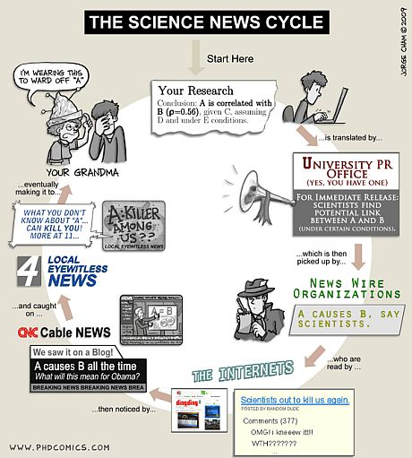

Disciplinas do 1º semestre de 2009:
Disciplinas ofertadas:
- Análise de algoritmos:
[2005/1],
[2006/1],
- Algoritmos e teoria dos grafos:
[2002/2],
[2004/2],
[2005/1],
[2005/2],
[2006/1],
[2006/2],
[2007/1],
[2007/2],
[2008/1]
- Algoritmos probabilísticos:
[2006/2],
[2008/2],
- Complexidade computacional:
[2003/2],
[2009/1],
- Introdução à criptografia:
[2007/2]
- Matemática discreta:
[2002/2],
[2003/1-A],
[2003/1-B],
[2003/2],
[2004/1],
[2008/1],
[2008/2],
[2009/1],
- Métodos de Álgebra Linear:
[2005/2],
[2007/1]
- Métodos probabilísticos:
[2003/1],
Tá perdido, sem ter o que fazer e veio parar na minha página web?
Leia algo mais interessante:
O caso de Veja por
Luís Nassif.
Infrequently
Asked Questions, Knuth
The
Algorithm: Idiom of Modern Science Bernard Chazelle
The P-versus-NP page"This page collects links around papers that try to settle the 'P versus NP' question"
Notas de aula
"I'm heir to the teachings of the radical Muslim thinker
Abū ‘Abd Allāh Muhammad ibn Mūsā al-Khwārizmī,
whose hallowed legacy lives on in sleeper cells
code-named stoc, focs, soda, cocoon, wads, and swat.
...FBI-baiting aside,
I take pride in being one of the few fellows
of the American Academy of Arts & Sciences
commissioned to look after Abu's great-grand children:
the hyperactive, patronymically named, Algorithms.
No idea why I get paid to do what I'd be doing anyway,
but remember, dear homepage, no one needs to know that.
And yes, I do hope that you too, hordes of strangers,
can smell the exquisite scent of
self-serving mush that makes a good homepage come alive."
Bernard Chazelle
POSCOMP
